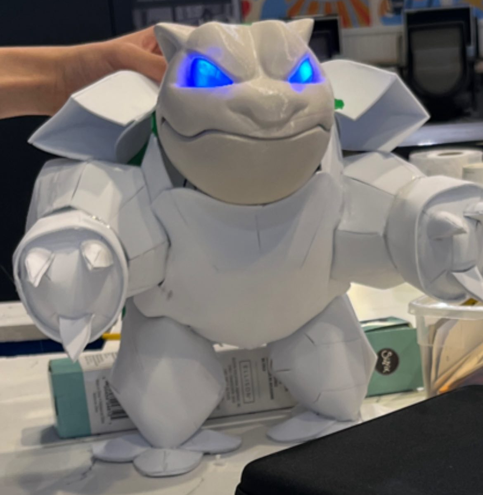
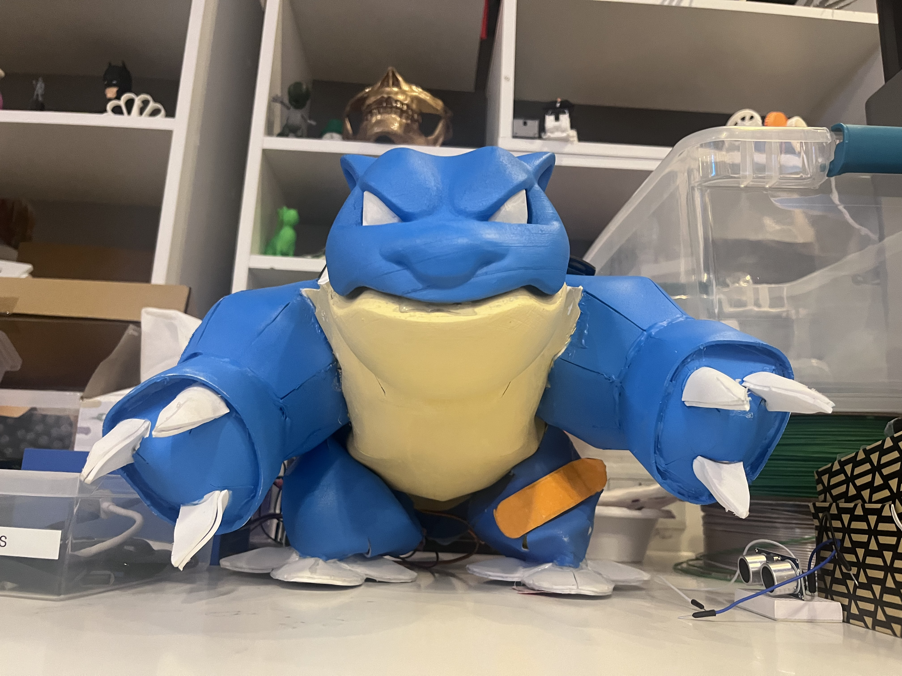

Profile
I am passionate about building strong relationships, exploring new experiences, and maintaining an active lifestyle. As an ambitious and adaptable student majoring in Computer Science and Italian/European studies, I bring a strong work ethic, exceptional problem-solving skills, and an insatiable curiosity that drives continuous learning and adaptation. As I work on personal projects, I am also eager to continue gaining hands-on experience and contribute to impactful projects that make a positive difference.
Return to HomepageEducation
St. Lawrence University - Canton, NY | May 2026
Skills:
- Technical: Java, Python, C, HTML/CSS, Frontend Development, Git/GitHub, Arduino, Microsoft Office Suite
- Soft: Written and Oral Communication, Leadership, Problem Solving, Teamwork, Project Management, Planning
LinkedIn Certifications/Relevant Courseworks:
- Learning Java 11, Java: Data Structures, Java Object-Oriented Programming, Java Algorithms, CSS, HTML/ CS140: Intro to Computer Programming, CS219: Techniques of Computer Science, CS250: Coding Practice, CS256: Data Structures
Projects
Wordle
- Utilized Python to re-create a viral game to challenge players to guess five-letter words within five attempts
- Coded a feature to randomly select words from an online repository, enhancing a guessing game’s functionality
Blastoise Model
- Implemented Arduino, C++, along with multiple intricate technical equipment to make the eyes turn blue
- Integrated ultrasonic sensors to the model that open the shell to reveal a flag when approached within a certain radius
- Diligently assisted in constructing the dimensions and support system to maintain its weight and structure


Personal Website
- Developed and designed a responsive online portfolio using a combination of CSS and HTML, highlighting a collection of projects, professional experiences, and skills in a visually appealing manner
- Applied modern CSS techniques, including custom properties and media queries, to build a dynamic and adaptive user interface that reduced layout issues by 25%
- Improved website’s navigability/accessibility by using semantic HTML elements to organize and structure content
Experience
Maurer Institute of Leadership Communications - Researcher
- Developed leadership, communication, and presentation skills with a group to create a presentation on how virtual reality can transform St. Lawrence University to become a more involved community
- Provided extensive research and testimonies to showcase the social and mental benefits of virtual reality for students
- Strategically allocated dedicated time frames for the team to extensively develop a presentation and rehearse together, ensuring a polished presentation to St. Lawrence University's faculty members and alumnus
DYCD’s Young Shark Entrepreneurship Program - Leader
- Collaborated with a group of academically diverse high school students across New York City to address plastic pollution through the various frameworks of the UN Sustainable Development Goals
- Examined over 100+ surveys that I assisted in disseminating, interviewed business owners and professors, received endorsements, and conducted 12 weeks of research on plastic pollution and its rife effects
- Organized and condensed key information into a presentation while conceptually delivering an app that was designed for a target audience to a panel of experts and investors for a competition- 2nd placement out of 20+ groups